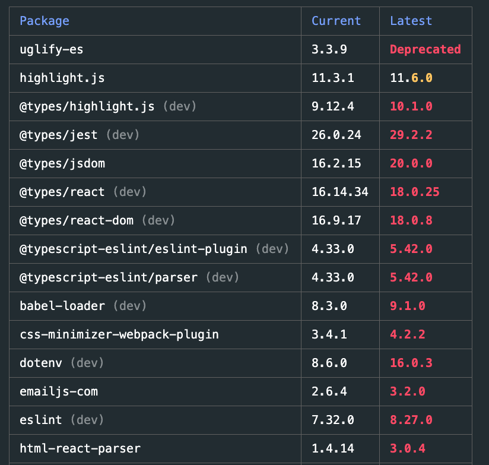
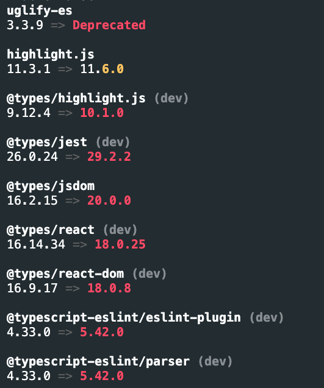

Table of Contents
TL;DRWhat is pnpm?What is pnpm outdated commandWhy did we want to support JSON format output in pnpm outdatedAbout <code>--format</code> optionJSON format output examplepnpm outdated command supports JSON format output
TL;DR
- pnpm outdated command supports JSON format output
- this allows us to make automation process of upgrading dependent packages in a project
- I implemented this, so I write a blog post about this
What is pnpm?
pnpm is one of the package managers used in Node.js environment.
pnpm uses symlink to provide fast and space-saving download of npm modules. Normally, when you install npm modules in a project, themselves, and all their nested dependencies, are downloaded under node_modules. In the case of pnpm, pnpm will store those modules in a single disk area across projects, and hard links to them will be placed under the project. In addition, when a project depends on a same modules but with different versions, pnpm saves only the differences of updates for each module, instead of installing each one in its entirety. These methods save space and speed up the installation of modules.
Another feature of pnpm is that it boldly adds utility commands and options not found in other package managers.

As a member of pnpm, I have implemented JSON format output for the pnpm outdated command, and I write a blog post about it.
What is pnpm outdated command
The pnpm outdated command is used to identify obsolete modules in your project that have been deprecated or have newer versions published.
For example, when I execute pnpm outdated command in shinyaigeek.dev, I get a output like below.

It also supports output in list format, so that I get an output like below with pnpm outdated --table false.

Why did we want to support JSON format output in pnpm outdated
the above table and list formats are too human-friendly and it is difficult to automate a process of updating dependent packages with such a formats. To facilitate automation, JSON format is now also supported as an output format.
About --format option
The --format option was added to support JSON format output, but it slightly overlaps with --table {boolean} in terms of responsibilities. Also, since --table takes a boolean value, so it should not be possible to specify output in JSON format with --table, both in terms of naming and functionality. To solve these issues, --format {table | list | json} has been added and --table has been removed. (implementation
JSON format output example
pnpm outdated --format json will produce an output like below.
{
"uglify-es": {
"current": "3.3.9",
"latest": "3.3.9",
"wanted": "3.3.9",
"isDeprecated": true,
"dependencyType": "dependencies"
},
"highlight.js": {
"current": "11.3.1",
"latest": "11.6.0",
"wanted": "11.3.1",
"isDeprecated": false,
"dependencyType": "dependencies"
},
"@types/highlight.js": {
"current": "9.12.4",
"latest": "10.1.0",
"wanted": "9.12.4",
"isDeprecated": true,
"dependencyType": "devDependencies"
},
...
It looks easy to automate update process. As of 2022/11/06, it has not been released yet, but we expect it in the next minor release.